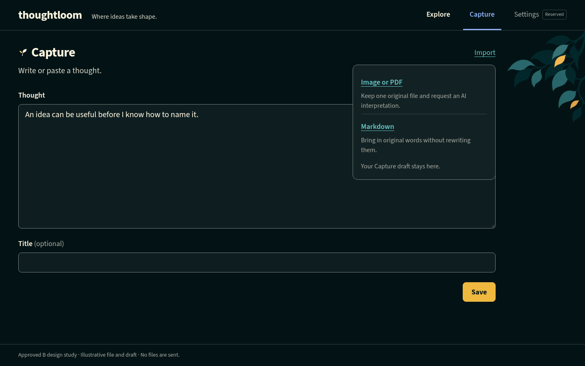
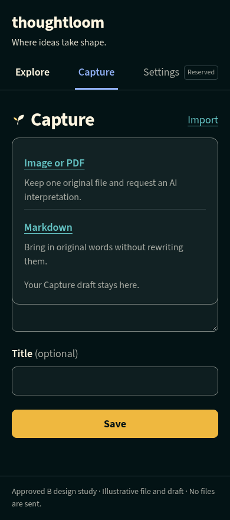

Approved media-import design
One Capture Import button, a compact chooser, and file details beside clarification. This selected B design and its affected-view/state families are approved for implementation. Everything shown is illustrative; no service or model is connected.
Selected B entry in the current Capture context
The existing approved canopy is retained on desktop Capture only and omitted on phones. No artwork is added to Import or the other working views. The root-only arrival and initial-only Explore clearing remain unchanged.


Markdown stays separate
The Markdown choice opens the existing Markdown import workflow. Its selection, batch reports and source inspection are unchanged; this packet adds no bulk media import.
Approval and implementation boundary
The user selected “Approve design” after reviewing the final variants and earlier state/view families. This packet is the selected-only handoff, not a production client or an accessibility certification. The comparison sheets show alternative states, never simultaneous UI.
Reproduce the screenshots and comp-only checks from the repository root with bun --no-env-file .impeccable/mocks/media-import/render-workflow.ts. Existing repository Playwright, Chromium, font and approved artwork are required; nothing is installed or generated automatically. Exact source/screenshot hashes and results are in render evidence.